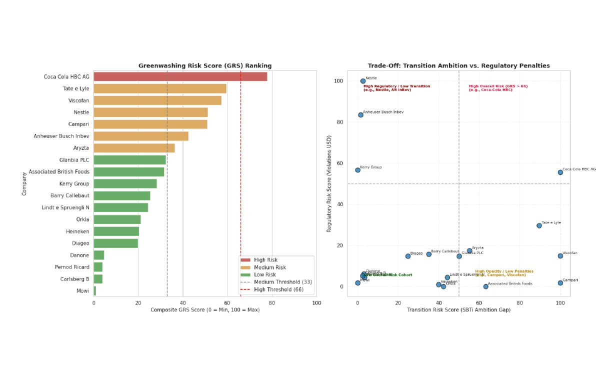

Python
pandas
ESG research
Corporate Greenwashing Risk Assessment
An analysis of greenwashing risk across 19 European food and beverage companies, combining emissions targets, ESG assessments, and violation records. I used Python scripts, with AI support, to explore gaps between sustainability commitments and the available evidence.